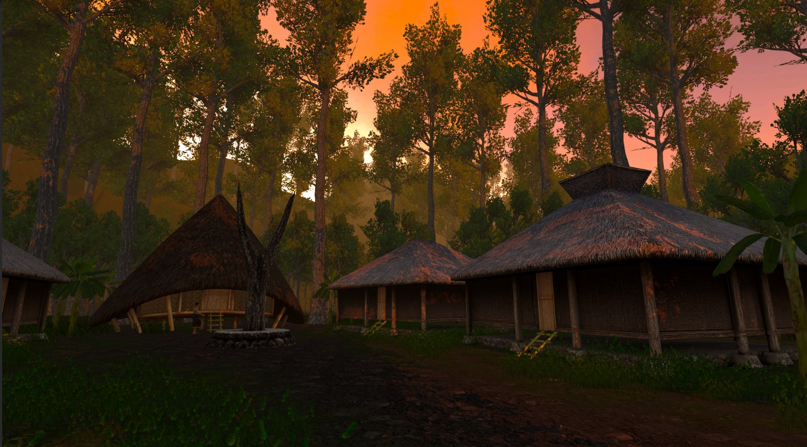

SEDANG DALAM PENGEMBANGAN
PUSAKA
TERLARANG
Kamu mahasiswa KKN yang datang ke sebuah desa adat di Nagekeo, Flores. Semua orang ramah, tetapi para tetua selalu mengulang satu pesan: jangan sentuh pusaka di rumah leluhur. Malam itu, rasa penasaranmu menang. Satu sentuhan saja, dan kamu terseret ke alam lain, sebuah desa sunyi tempat tradisi yang kamu remehkan menjadi satu-satunya jalan pulang.
Coba Prototipe
BUDAYA YANG DIANGKAT
Nagekeo, Flores, Nusa Tenggara Timur
Flores menyimpan kekayaan budaya yang luar biasa, tetapi Nagekeo masih jarang terdengar di luar daerahnya. Di sana, tradisi tidak berhenti di museum. Ia hidup dalam rumah adat, tenun ikat, upacara syukur panen, dan salah satu yang paling unik, Etu, tinju adat yang digelar sebagai wujud syukur dan sportivitas. Petarungnya saling bertukar pukulan di arena, lalu pulang tanpa dendam. Nilai seperti ini jarang kita temui di tempat lain, dan itulah alasan kami ingin memperkenalkannya.
Di Pusaka Terlarang, budaya ini bukan hiasan latar. Ia adalah inti permainan. Pemain menjelajahi alam leluhur yang dibangun dari unsur desa adat, memecahkan puzzle simbol dan puzzle tenun tradisional, lalu menutup perjalanan dengan duel yang terinspirasi dari Etu. Pemain tidak hanya melihat budaya. Pemain harus memahaminya agar bisa pulang.
Mahasiswa KKN yang melanggar pantangan, menyentuh pusaka sakral, dan terseret ke alam leluhur. Pesannya jelas: penasaran itu wajar, tetapi harus disertai hormat pada batas yang dijaga komunitas.
Tiga pusaka, tiga ujian budaya: puzzle simbol adat, puzzle tenun tradisional, dan duel berirama terinspirasi Etu. Jurnal penelitian mencatat makna budaya yang ditemukan pemain.
Rumah adat, tugu batu, kain tenun, dan ladang kosong dalam suasana sunyi yang mencekam. Audio memadukan gong, ketukan kayu, dan nyanyian lirih yang terdengar seperti peringatan.
PUSAKA
Sentuh, putar,
amati dari dekat.
Seret untuk memutar · Cubit atau scroll untuk zoom
GALERI PENGEMBANGAN
Serpihan dari
dunia ini.